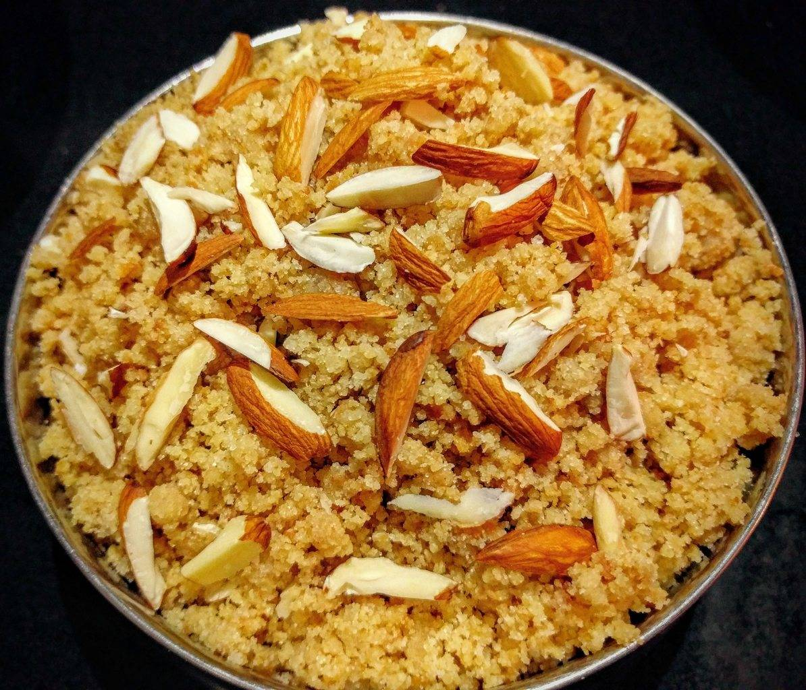

Churma
Home
Description
Churma is a traditional Rajasthani sweet made by crushing baked or fried wheat dough balls (baatis) and mixing them with ghee, jaggery or sugar, cardamom, and dry fruits. It's rich, crumbly, and served as a sweet side with Dal Baati, completing the iconic trio.
Ingredients
- 1 cup Whole wheat flour (atta)
- 2 tbsp Semolina (sooji/rava) - optional, for texture
- 3 tbsp Ghee (for dough)
- 4 tbsp Ghee (for mixing after baking/frying)
- 1/2 cup Jaggery (grated) or Powdered sugar (to taste)
- 1/2 tsp Cardamom powder
- 1 tbsp Chopped dry fruits (cashews, almonds, raisins) – optional
- Warm water (to knead)
Steps
1. Make The Dough
- Mix flour, semolina (if using), and 3 tbsp ghee in a bowl.
- Add warm water little by little and knead into a stiff dough.
- Divide into small thick discs (like baatis).
2. Cook The Dough
- Deep-fry: In ghee or oil on medium-low heat until golden and crispy.
3. Crush Into Churma
- Once cool, break the baatis and grind or crush them into a coarse powder (use hands, a grinder, or mortar-pestle).
- Mix in grated jaggery or sugar, cardamom powder, and ghee.
- Add dry fruits if you like.
4. Serve
- Serve warm or at room temperature alongside Dal Baati.
- Drizzle more ghee on top if you're feeling indulgent!